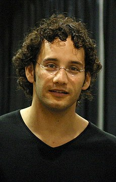
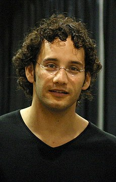

Josh Waitzkin (1976-) – Josh Waitzkin est un joueur d’échecs et auteur américain, reconnu pour son parcours remarquable dans le monde des échecs. Né à Madison, dans le Wisconsin, il a grandi à New York, où il a découvert les échecs très jeune. À six ans, il commence à jouer sérieusement et révèle rapidement un talent exceptionnel. À 21 ans, il devient champion national des États-Unis dans sa catégorie. Son histoire gagne en notoriété grâce au livre "Searching for Bobby Fischer", écrit par son père, qui sera adapté en film en 1993. Après sa carrière d’échecs, Josh s'est tourné vers les arts martiaux, notamment le Tai Chi, où il a remporté un championnat du monde. En 2007, il publie "The Art of Learning", un livre dans lequel il partage les leçons et les expériences tirées de son entraînement aux échecs et au Tai Chi. En 2008, il fonde la JW Foundation, une organisation éducative à but non lucratif qui se concentre sur une approche personnalisée de l’apprentissage, inspirée de son propre parcours.
 
